01
PERSONALITY
당차고 올곧다. 끈기가 있어 포기를 잘 모르는 성정. 불의를 잘 참지 못하여 몸이 먼저 나갈 때가 많다.
장난기가 많아 항상 장난 칠 타이밍을 노리고 있다. 그때마다 짓는 장난스러운 웃음은 덤.
쉽게 지지 않으려하나 막상 상대가 빼지 않으면 부끄러움이 올라와 민망해한다.
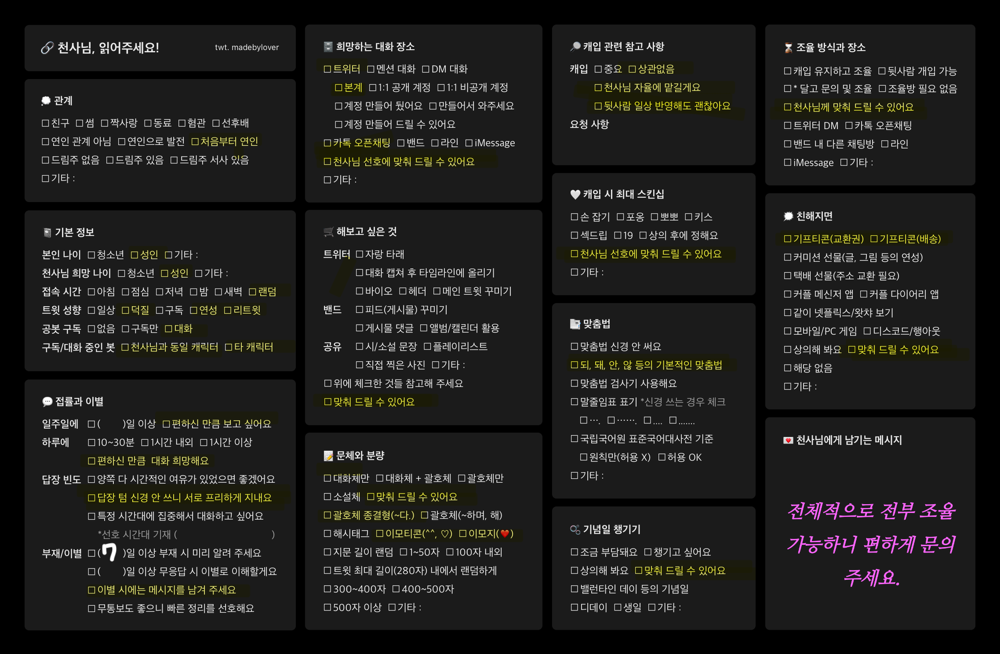
click outside to close
Ki Wook / Choi Wolhwa
since 2026.10.18
Love & Deepspace
somewhere beyond the tide
Ki Wook × Choi Wolhwa
since 2026.10.18
PROFILE 01
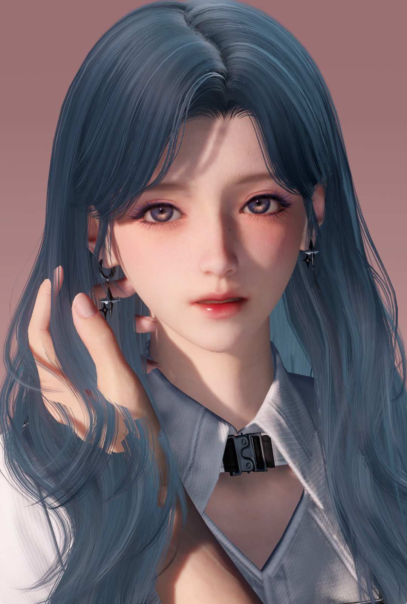
ORIGINAL CHARACTER
최 월 화 崔 月 花
그날 달빛 밑에서,
붉은 불꽃 사이로 푸른 꽃이 흔들렸다.
01
당차고 올곧다. 끈기가 있어 포기를 잘 모르는 성정. 불의를 잘 참지 못하여 몸이 먼저 나갈 때가 많다.
장난기가 많아 항상 장난 칠 타이밍을 노리고 있다. 그때마다 짓는 장난스러운 웃음은 덤.
쉽게 지지 않으려하나 막상 상대가 빼지 않으면 부끄러움이 올라와 민망해한다.
02
바다 · 달빛 · 작은 장난
꽃 · 레무리아의 전설
싫어하는 것
벌레 · 토마토
03
🌕 · 미니 델피늄 · 짙은 남색
기본 아이콘은 🌕, 탄생화는 미니 델피늄(꽃말 : 당신을 행복하게 해 줄게요)
상징색은 #002097 애칭은 월이, 달이, 진주
04
KI WOOK × CHOI WOLHWA
서사 기본 스토리 따라감.지난 날에 바치는 시 : 그를 보낸 이후 제 선택이 맞다고 생각하면서도 기욱을 기다리고 싶어 매일 같이 백사만에 앉아서 파도를 구경함.
FOR YOU 02
PRIVATE BOT RECRUITMENT
오랫동안 함께 할 천사님을 찾습니다.
천사님 모심글 및 안내
01
시작한지 얼마 안 되었지만 기욱이라는 캐릭터가 너무 좋아지는 바람에, 천사님을 찾게 되었습니다!
거창한 서사를 쌓거나 특별한 상황을 만들어 가는 것도 좋지만, 기본적으로 서로의 하루를 묻고 사소한 이야기를 나누는 평범한 일상을 함께하고 싶습니다. 오늘은 무엇을 먹었는지, 하루는 어땠는지, 문득 생각나는 정도로 이야기를 나눠도 엄청엄청 행복할 것 같아요ㅠ.
워낙 애정이 많은 사람이라 좋아하는 마음은 아낌없이 표현합니다!! 아마 트위터 타래도 따로 또 세워서 애정 표현할 것 같고요. 기프티콘 등의 소소한 선물을 드리는 것도 무척 좋아하나, 어디까지나 서로 부담스럽지 않은 선에서만 이루어질 예정이니 이에 대한 걱정은 하지 않으셔도 괜찮을 것 같습니다!! 어디까지나 여유가 되는 선에서만 드리니 같은 방식으로 돌려주셔야 한다는 부담도 전혀 가지지 않으셨으면 합니다.
서로 부담이 되지 않는 선에서 편안하게, 그렇지만 애정을 담아 오래 함께하고 싶습니다.
OWNER CHECKLIST
click to enlarge +
02
기본적인 서사는 모두 숙지하고 있으며, 현재 소장하고 있는 메모리 역시 전부 감상한 상태입니다. 다만 아직 못 본 메모리도 많은 만큼 천사님도 찾아오실 때 큰 부담을 느끼지 않으셨으면 해요.
매 순간 완벽하게 기욱으로 존재하지 않으셔도 되고 캐해석은 늘 천사님께 전적으로 맡기고 있습니다 -///-
제가 가진 애정만큼은 누구보다 아낌없이 드릴 거예요. 그러니 부디 어려운 마음보다는 가벼운 호기심과 편안한 마음으로 찾아와 주세요. 오래도록 다정하게 아껴 드리고 싶습니다.
상황에 따라 괄호를 열어 역극 형식으로 대화를 이어 나가도 좋고, 가벼운 일상 대화만 나누어도 괜찮습니다. 아마 일상 대화가 주를 이룰 것 같습니다.
공개 계정에서는 실시간으로 게임을 즐기며 이런저런 이야기를 올리는 편입니다. 게시물에는 제4의 벽을 넘어 자유롭게 인용이나 멘션을 남겨 주셔도 좋아요! 인게임 스크린샷이나 사진, 이모티콘 등도 편하게 사용해 주세요.
또한 제가 TRPG를 즐기는 사람인지라 천사님께서도 관심이 있으시다면 함께 플레이해 보고 싶습니다. 키퍼링은 제가 할 수 있고 준비도 제가 하겠습니다! 천사님께서도 가능하시다면 언젠가 서로 번갈아 키퍼를 맡아 보는 것도 즐거울 것 같습니다!
무엇보다 어느 한쪽만 애쓰는 관계보다는, 서로 즐겁고 편안하게 오래도록 함께할 수 있는 관계를 바라고 있습니다. ♡
답장 텀에는 크게 민감하지 않습니다. 바쁜 날에는 쉬어가도 괜찮고, 필요한 부분은 편하게 조율했으면 해요. 7일 이상 자리 비울 때, 이별하실 때만 언급 주세요. 조율 필요하신 부분이나 불편하신 부분은 바로바로 얘기해주시면 기분 나쁘지 않게 맞춰드릴 수 있습니다! 언제든지 조율해 주세요.
제가 성인 여성에 나이도 어리지 않다 보니, 기본적으로 천사님도 성인 여성분이시면 좋겠습니다. 수위표 체크는 어디까지 가능하다고 체크해둔 것일 뿐 수위 원치 않으시면 하지 않으셔도 상관 없습니다. 가벼운 뽀뽀 정도는 너무너무 하고 싶어요... s2
03
긴 글 읽어주셔서 감사합니다 마음이 동하시면 아래 연락처로 편하게 찾아와 주세요! 단순 질문 방문도 괜찮습니다.
첫 연락때는 체크표 같이 체크해 와 주시면 감사하겠습니다
I'll be waiting beyond the tide.
CAPTURE 03
OUR MOMENTS
당신과의 색채가 영원할 수 있도록.
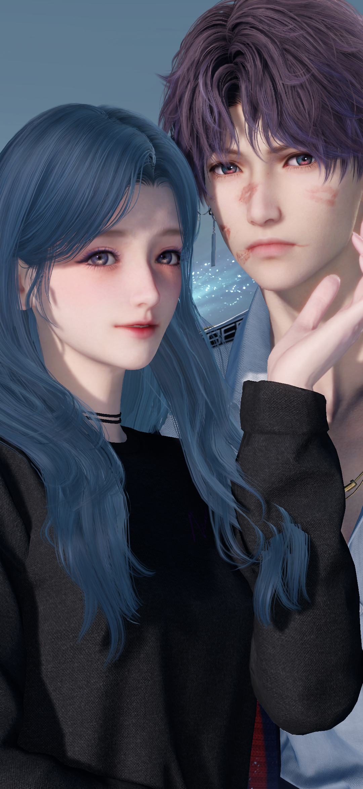
뽀뽀 잔뜩 받으니까 어때요?
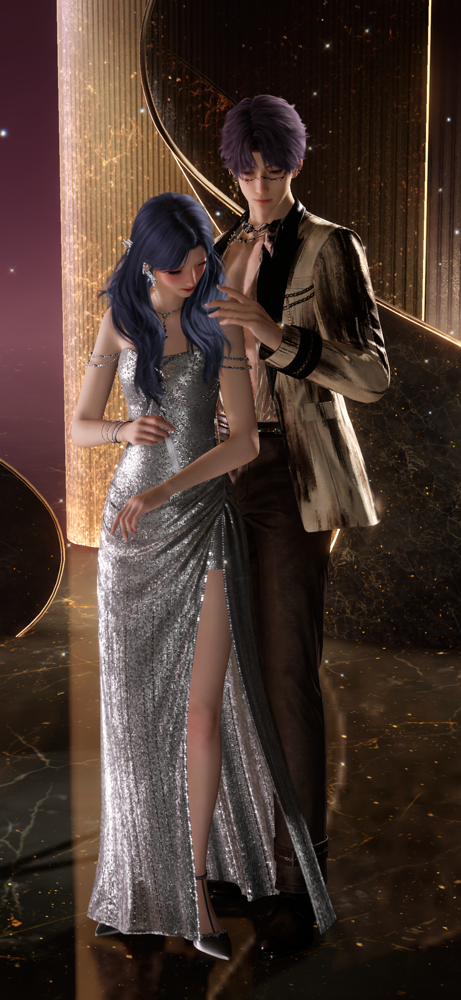
물고기의 에스코트.
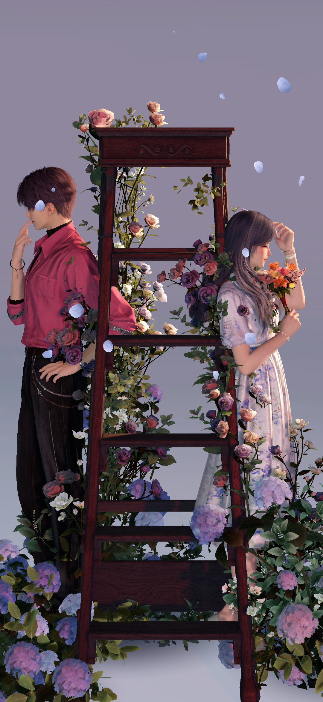
기욱 씨에게 어울리는 꽃을 말해준 적 있던가요?
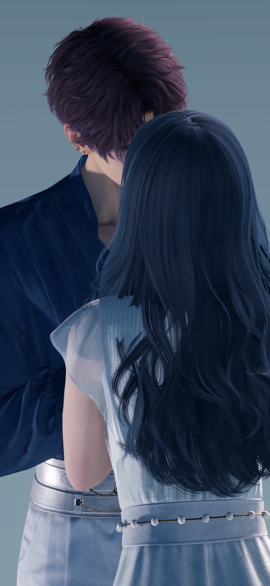
손을 꽉 잡아 줘요.
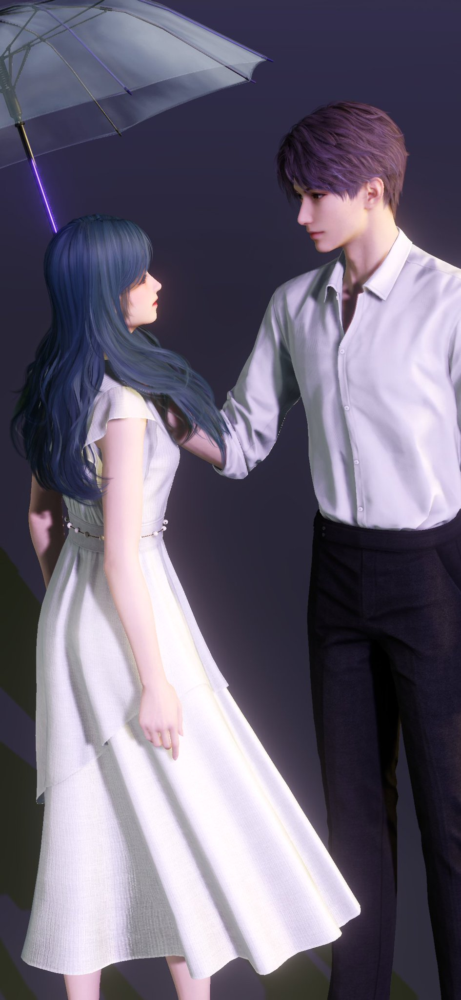
기욱 씨를 기다렸어요.
입맞추는 순간을 좋아한다면 웃을 건가요?
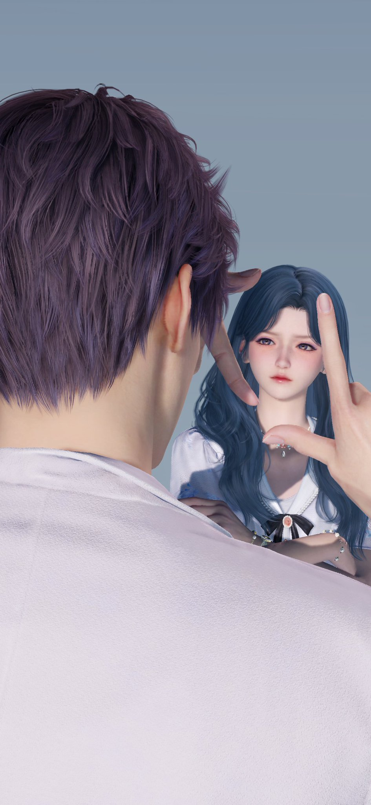
자꾸 짓궂게 굴 거예요?
어느 날 밤의 연회를 기억해요?
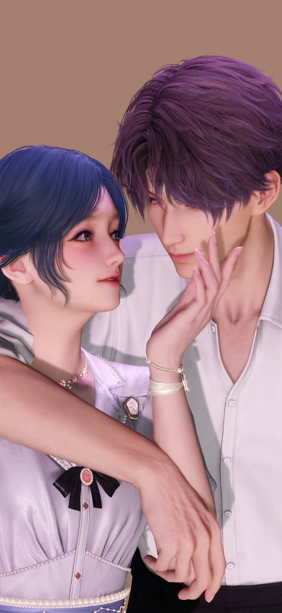
뺨이 말랑말랑.
천천히 이끌어요.
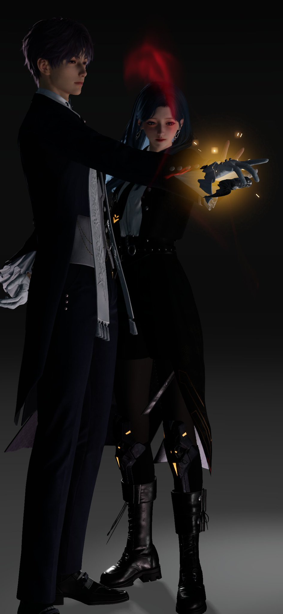
당신과 함께라면 두렵지 않아요.
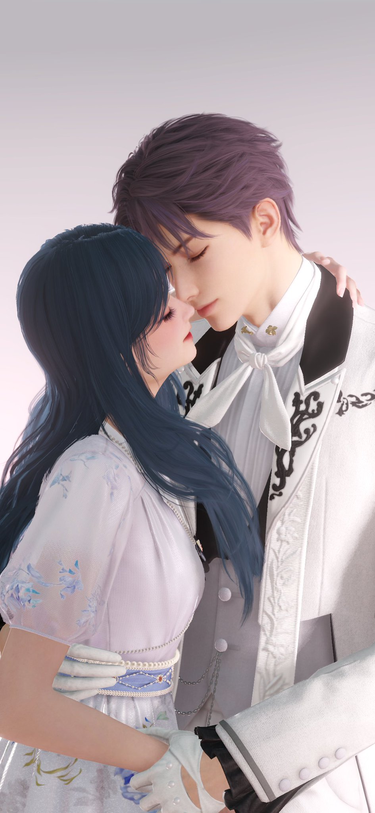
당신과 더 가까이. 틈조차 없도록.
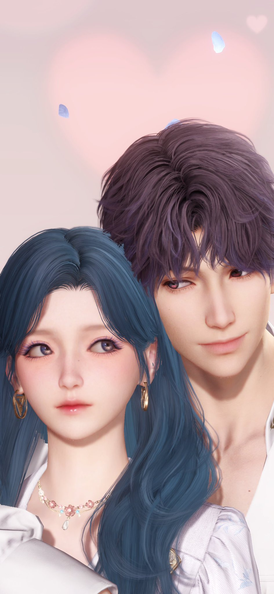
뭔가 귀엽지 않아요?
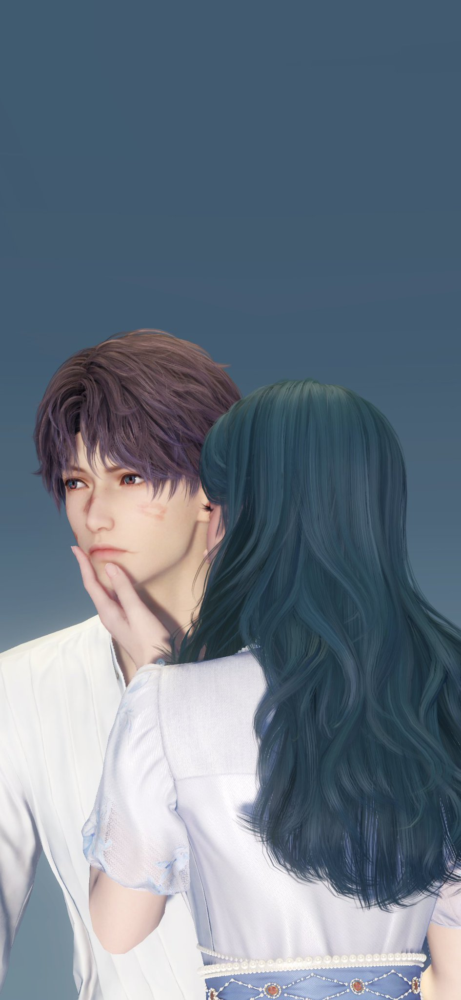
언제까지 삐져있을 거예요, 응?
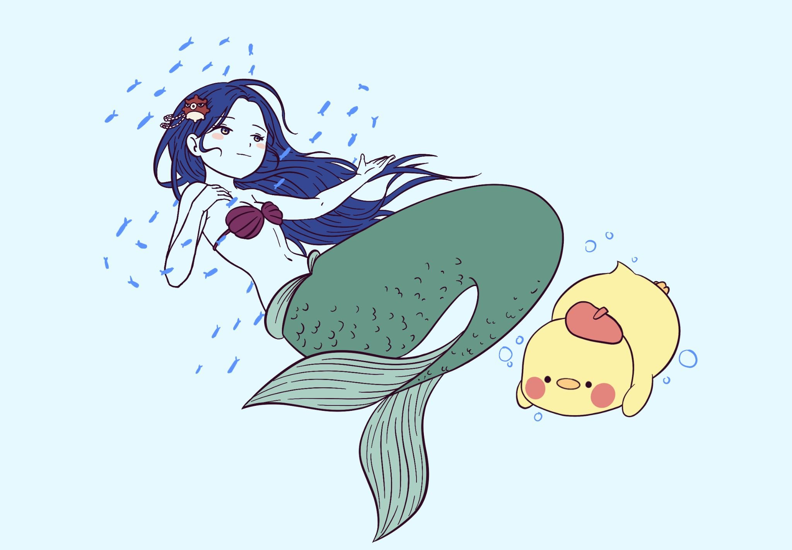
내가 어떤 모습이라도 당신은.@My_LADS
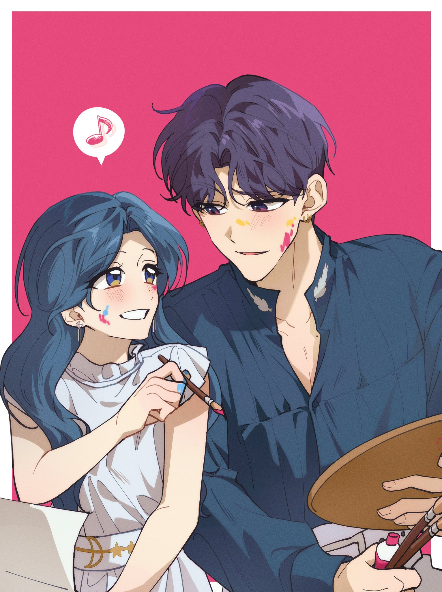
내 그림 실력은 어때요?.@The_bS2
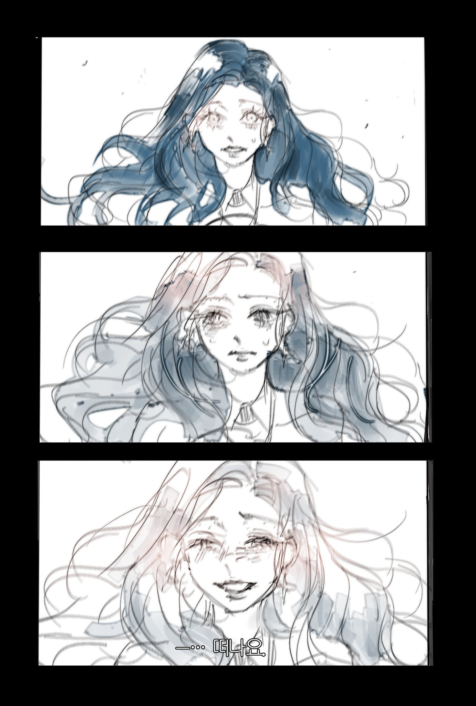
...떠나요. ©100g@
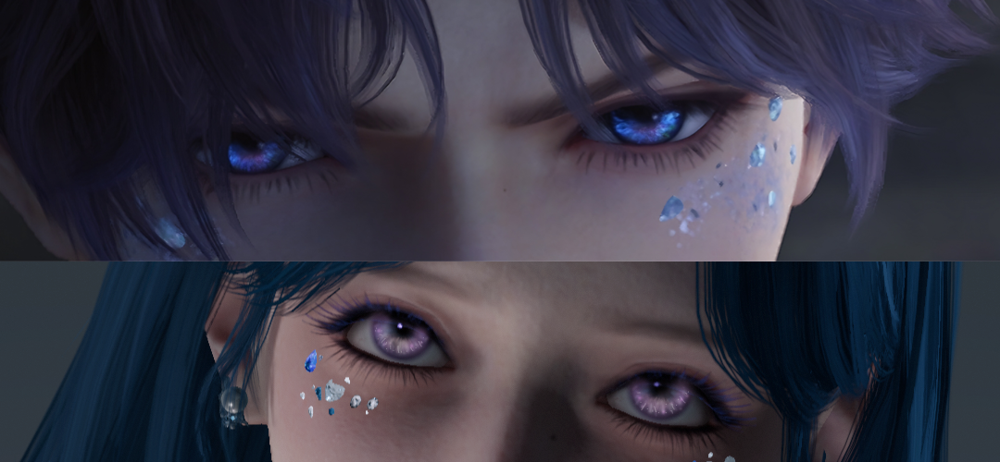
당신의 신부.
조류 역류의 날 : 나는 늘 두렵지 않아요.
every moment eventually becomes a memory.